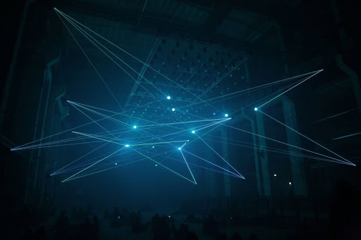
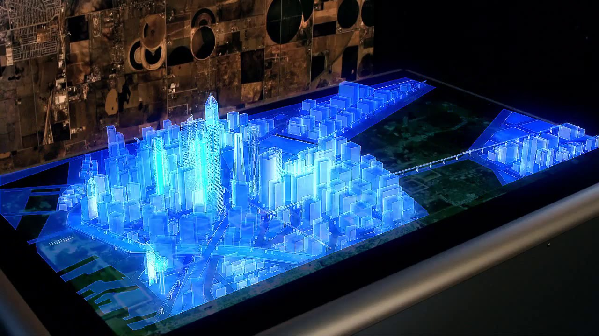

Pokazy laserowe

W świecie przestrzeni poprzecinanej wirującymi laserowymi płaszczyznami i tunelami. W specjalnie do tego celu wytworzonej „mgle” (dla widzów absolutnie nieszkodliwa para wodna) pojawiają się kolorowe promienie lasera, tworzące w synchronizacji z muzyką ruchome konstelacje przestrzenne. Efektem tego jest powstanie u widza wrażenia przeniesienia się do innego wymiaru.
Przestrzenne pokazy laserowe sprawdzają się za równo wewnątrz budynku jak na otwartej przestrzeni. Czas pokazu laserowego to minimum 15 minut. Czas trwania ustalamy indywidualne.
Pionierzy technologii hologramu

Za pomocą hologramów, podczas imprezy firmowej lub prezentacji nowego produktu, jesteśmy w stanie przenieść dowolny model hologramowy. Samochód, nowy model telefonu, a może model całego hotelu? Nowa technologia i nasza pasja sprawia że hologramy stają się rzeczywistością. Jest to z pewnością jedna z nowoczesnych technik, szeroko odbijająca się echem w świadomości widzów, wprowadzając element ciekawości oraz innowacji, tym samym wywierając ogromne wrażenie.